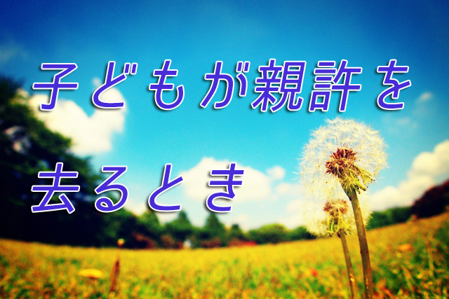

連休中ちょうど「子どもの日」に息子が家を出た。といっても家出したとかいうことではなく、息子は以前から「大学生になったら一人暮らしをしたい」と言っていて私たち親も一人暮らしは自立のチャンスと考えていたので、予定どおりアパートを見つけて引っ越して行ったのである。
もっとも、学校も都内で自宅から通えない距離でもなく生活費もある程度は送るわけだから完全な自立ではないが、それでも私も経験あるが一人暮らしは自立の第一歩には違いない。
ただ、親として我が子が「家から出て行く」ことに一抹の寂しさを感じたのも確かだ。引っ越しの当日は妻も息子についてアパートに行き掃除をしたり、洗濯機の使い方や簡単な料理法を教授（？）して来たらしいが、帰宅後夕食のテーブルを囲むと「何か寂しいね」と言う。
家族が一人欠けたのだからそれは当然なのだが、やはり食卓はシーンとして息子の「不在感」がただよう。
どこの家庭でも同じだが、親というものは子育てに多大なエネルギーを使ってきた。幼いときは特に熱を出したり転んでケガをしたりと手がかかり、学校に入れば入ったで成績のことやら部活、毎朝の弁当作りと肉体的にも精神的にも気の休まるときはない。直接子どもの世話をする母親は特に大変だ。「早く大きくなって世話から解放されたい」と願わない親はいないだろう。いま子育てに悪戦苦闘（⁉）している母親なら特にそう願うに違いない。
しかし子育て期間は意外に短い。私も実感するが、つい最近まで泣いたり笑ったりしていたガキンチョが、あっという間に高校生大学生となり親許を離れて行ってしまう。
あんなに「早く自立して欲しい」と思っていた子どもが実際に成長して親から離れると寂しくなってしまう。
こうして親も気づく。子育てにバタバタと奔走していたあの時期こそが充実と幸せの時間だったということに。
当たり前だが親は子どもがいてくれないと親として存在できない。子どもがいてくれるからこそ親の務めも果たせる。逆に言えば親のほうが子どもに依存していると見ることもできる。現に子育てを通して親も様々な気づきや学びを得てきたわけだ。苦しいこともあったが、楽しいことも嬉しいこともあった。泣いた日もあったが笑ったこともあった。つまり親も子どものおかげで人として成長できたということ。
そう考えると子どもに感謝の気持ちがわき起こる。子育てという人生の一大課題を与えてくれたことに。
息子が引っ越す当日。妻と息子が準備にバタバタしている間私はずっとベランダで一人本を読んでいた。いよいよ出発というとき息子が「じゃ、行って来ます」とハツラツとした感じでベランダに顔を出す。「オゥ頑張れよ」と私は返事した。
だが私が本当に言いたかったのは「ありがとう」だった。「今まで君の父親をやらせてくれて…」